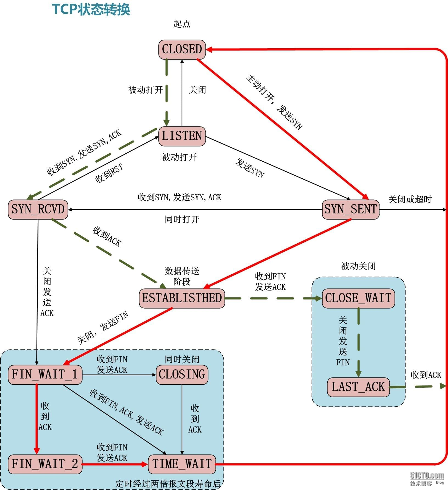
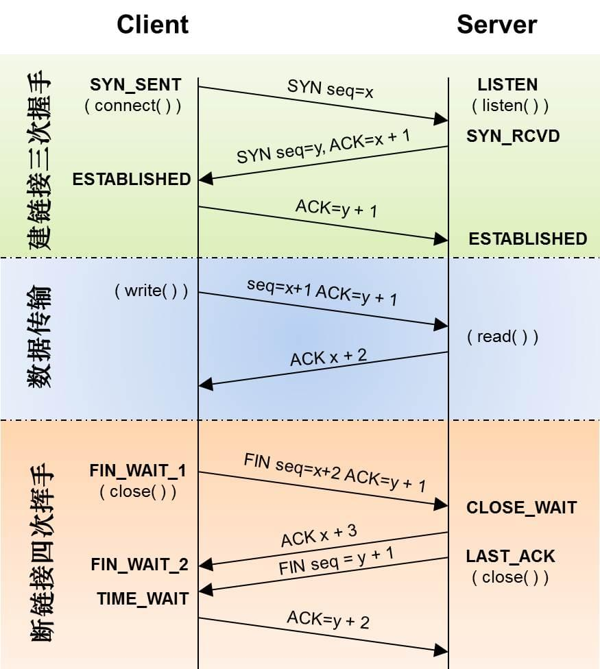

Socket 是对 TCP/UDP 封装后提供的一层接口, 我们可以利用 Socket 编写服务端和客户端, 然后让客户端和服务端建立 TCP 或 UDP 的连接.
Unix Socket 编程的函数接口
在 Unix/Linux 中的 Socket 编程主要通过调用 listen, accept, write read 等函数来实现的. 具体如下图所示:

Golang 中的 Socket 编程模型
和 Linux Socket 编程相比, go 的 Socket 编程就简单很多. 服务端直接通过 Listen + Accept 模式即可实现:
func connHandler(c net.Conn) {
for {
cnt, err := c.Read(buf)
c.Write(buf)
}
}
func main() {
server, err := net.Listen("tcp", ":1208")
for {
conn, err := server.Accept()
go connHandler(conn)
}
}
|
而客户端直接调用 Dial 即可:
func connHandler(c net.Conn) {
for {
c.Write(...)
c.Read(...)
}
}
func main() {
conn, err := net.Dial("tcp", "localhost:1208")
connHandler(conn)
}
|
接下来我们会通过一个示例来介绍如果通过 go 进行 Socket 编程, 具体的代码存放在 Github 上.
实现一个可以接受不同命令的服务端
我们实现一个服务端, 它可以接受下面这些命令:
ping 探活的命令, 服务端会返回 “pong”echo 服务端会返回收到的字符串quit 服务端收到这个命令后就会关闭连接
具体的服务端代码如下所示:
package main
import (
"fmt"
"net"
"strings"
)
func connHandler(c net.Conn) {
if c == nil {
return
}
buf := make([]byte, 4096)
for {
cnt, err := c.Read(buf)
if err != nil || cnt == 0 {
c.Close()
break
}
inStr := strings.TrimSpace(string(buf[0:cnt]))
inputs := strings.Split(inStr, " ")
switch inputs[0] {
case "ping":
c.Write([]byte("pong\n"))
case "echo":
echoStr := strings.Join(inputs[1:], " ") + "\n"
c.Write([]byte(echoStr))
case "quit":
c.Close()
break
default:
fmt.Printf("Unsupported command: %s\n", inputs[0])
}
}
fmt.Printf("Connection from %v closed. \n", c.RemoteAddr())
}
func main() {
server, err := net.Listen("tcp", ":1208")
if err != nil {
fmt.Printf("Fail to start server, %s\n", err)
}
fmt.Println("Server Started ...")
for {
conn, err := server.Accept()
if err != nil {
fmt.Printf("Fail to connect, %s\n", err)
break
}
go connHandler(conn)
}
}
|
编译上面的服务端代码并启动后, 我们用 telnet 测试下服务端是否正常工作, 结果如下图所示:

我们分别在 telnet 中依次输入了下面三个命令:
pingecho hello, hbliuquit
客户端的实现
我们可以自己实现一个客户端来和我们的服务端进行通信, 实现类似 telnet 的功能, 代码如下:
package main
import (
"bufio"
"fmt"
"net"
"os"
"strings"
)
func connHandler(c net.Conn) {
defer c.Close()
reader := bufio.NewReader(os.Stdin)
buf := make([]byte, 1024)
for {
input, _ := reader.ReadString('\n')
input = strings.TrimSpace(input)
if input == "quit" {
return
}
c.Write([]byte(input))
cnt, err := c.Read(buf)
if err != nil {
fmt.Printf("Fail to read data, %s\n", err)
continue
}
fmt.Print(string(buf[0:cnt]))
}
}
func main() {
conn, err := net.Dial("tcp", "localhost:1208")
if err != nil {
fmt.Printf("Fail to connect, %s\n", err)
return
}
connHandler(conn)
}
|
我们可以编译上面的代码, 启动后便可执行服务端支持的命令, 如下图所示:

TCP 状态转换图
其中虚线标识被动方状态变化, 红色粗线标识主动方的状态变化:

从服务端客户端角度来观察的状态变化:

References